<mat-toolbar class="darija-toolbar" color="primary">
  <mat-toolbar-row>
    <button mat-button [routerLink]="['/words']">
      
      <span>Darija</span>
    </button>
    <button mat-icon-button [mat-menu-trigger-for]="menu">
      <mat-icon>more_vert</mat-icon>
    </button>
  </mat-toolbar-row>
  <mat-menu x-position="before" #menu="matMenu">
    <ng-container *ngIf="(user$ | async)">
      <div [routerLink]="['/profil']" class="profil" mat-menu-item>
        <div class="profil-pic">
          
        </div>
        <div>
          &nbsp;{{(user$ | async)?.displayName}}
        </div>
      </div>
      <div mat-menu-item>
        <mat-slide-toggle [(ngModel)]="nightMode" (ngModelChange)="setNightMode.emit($event)">
          Mode Nuit
        </mat-slide-toggle>
      </div>
      <button mat-menu-item (click)="logout()">Se déconnecter</button>
    </ng-container>
    <button *ngIf="!(user$ | async)" mat-menu-item (click)="login()">Se connecter</button>
  </mat-menu>
</mat-toolbar>
<mat-toolbar></mat-toolbar>
